User Management: complete media only
11 October 2026. Before: approved bddad2570fb114670b4c1aea132e6c61fe555a25. After: local cleanup stacked on draft PR #20. Actual project image bytes and frozen read-only public records in Chrome browser emulation. These are not physical-device results or evidence of a deployment.
The incomplete registration excerpt is removed from public selection. The complete 1040 × 1688 registration portrait, statistics screen and registration workflow remain. Two primary/gallery/viewer selections replace three; no source files or live records are deleted.
Before observations · After observations · 36 real-asset viewer mode checks · Preserved Cedar caption geometry
 Before: legacy registration excerpt. Historical evidence only; this selection is retired.
After: the retained complete registration portrait, natural proportions at 390px.
Before: legacy registration excerpt. Historical evidence only; this selection is retired.
After: the retained complete registration portrait, natural proportions at 390px.
320px — two complete selections
 Before introduction at 320px: three selections.
After introduction at 320px: two selections.
Before introduction at 320px: three selections.
After introduction at 320px: two selections.
Every remaining primary image and expanded-gallery selection
 Primary 1 / 2: Public platform statistics; 320px.
Primary 1 / 2: Public platform statistics; 320px.
 Primary 2 / 2: Complete public registration portrait; 320px.
Primary 2 / 2: Complete public registration portrait; 320px.
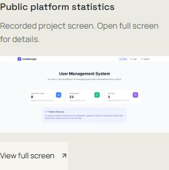
Expanded 1 / 2: Public platform statistics; 320px.
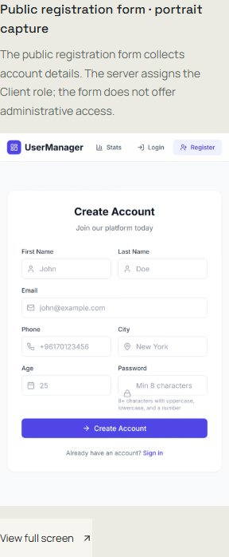
Expanded 2 / 2: Complete public registration portrait; 320px.
Registration workflow and all full-screen selections
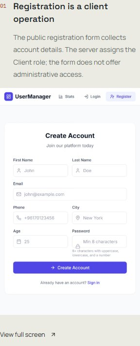
Retained registration workflow with its complete portrait, 320px.
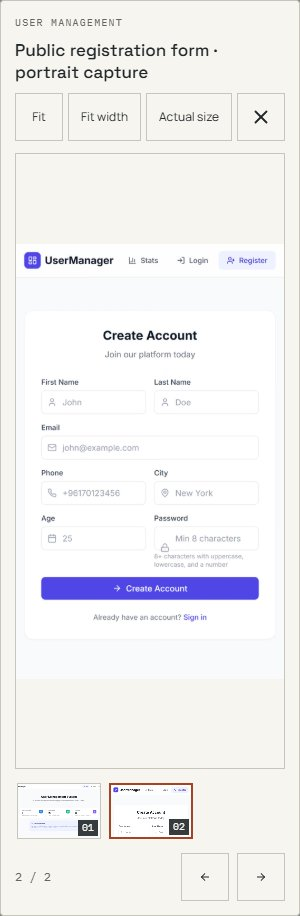
Registration workflow viewer: full original, 320px.
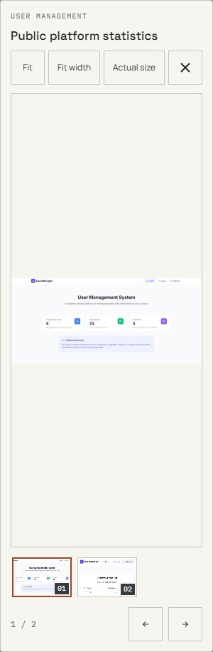
Fit viewer selection 1 / 2, 320px. Fit width and Actual size checks are recorded in viewer-panning.json.
 Fit viewer selection 2 / 2, 320px. Fit width and Actual size checks are recorded in viewer-panning.json.
Fit viewer selection 2 / 2, 320px. Fit width and Actual size checks are recorded in viewer-panning.json.
390px — two complete selections
Before introduction at 390px: three selections.
 After introduction at 390px: two selections.
After introduction at 390px: two selections.
Every remaining primary image and expanded-gallery selection
 Primary 1 / 2: Public platform statistics; 390px.
Primary 2 / 2: Complete public registration portrait; 390px.
Primary 1 / 2: Public platform statistics; 390px.
Primary 2 / 2: Complete public registration portrait; 390px.
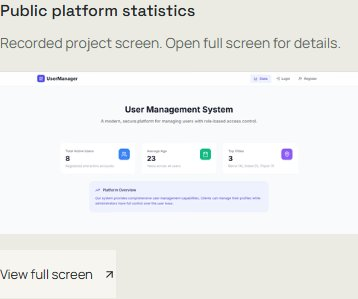
Expanded 1 / 2: Public platform statistics; 390px.
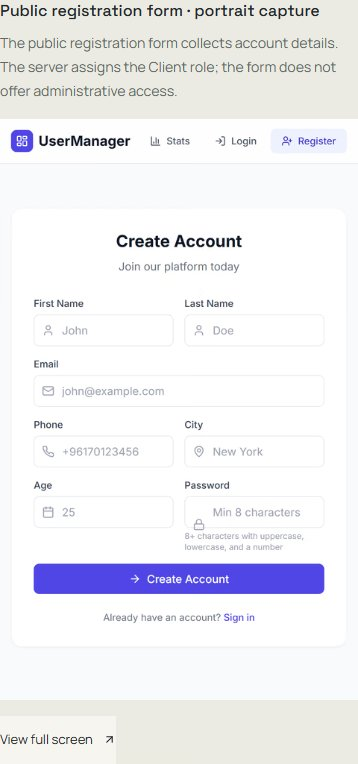
Expanded 2 / 2: Complete public registration portrait; 390px.
Registration workflow and all full-screen selections
 Retained registration workflow with its complete portrait, 390px.
Retained registration workflow with its complete portrait, 390px.
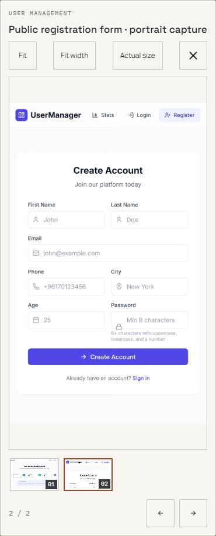
Registration workflow viewer: full original, 390px.
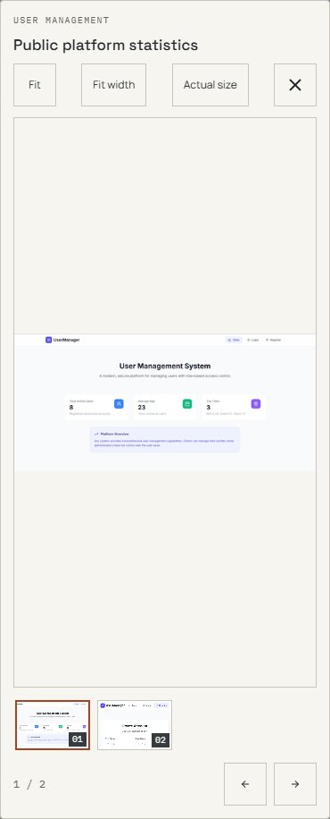
Fit viewer selection 1 / 2, 390px. Fit width and Actual size checks are recorded in viewer-panning.json.
 Fit viewer selection 2 / 2, 390px. Fit width and Actual size checks are recorded in viewer-panning.json.
Fit viewer selection 2 / 2, 390px. Fit width and Actual size checks are recorded in viewer-panning.json.
430px — two complete selections
 Before introduction at 430px: three selections.
After introduction at 430px: two selections.
Before introduction at 430px: three selections.
After introduction at 430px: two selections.
Every remaining primary image and expanded-gallery selection
 Primary 1 / 2: Public platform statistics; 430px.
Primary 1 / 2: Public platform statistics; 430px.
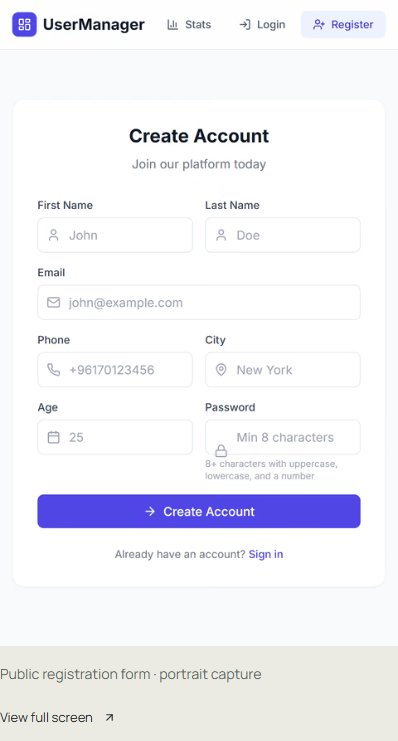
Primary 2 / 2: Complete public registration portrait; 430px.
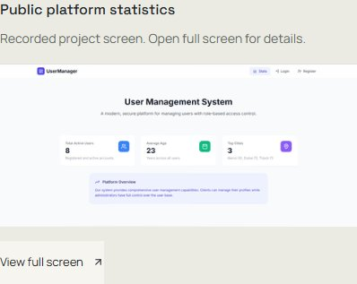
Expanded 1 / 2: Public platform statistics; 430px.
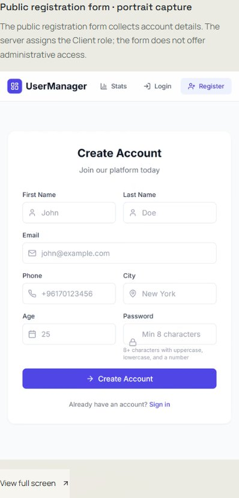
Expanded 2 / 2: Complete public registration portrait; 430px.
Registration workflow and all full-screen selections
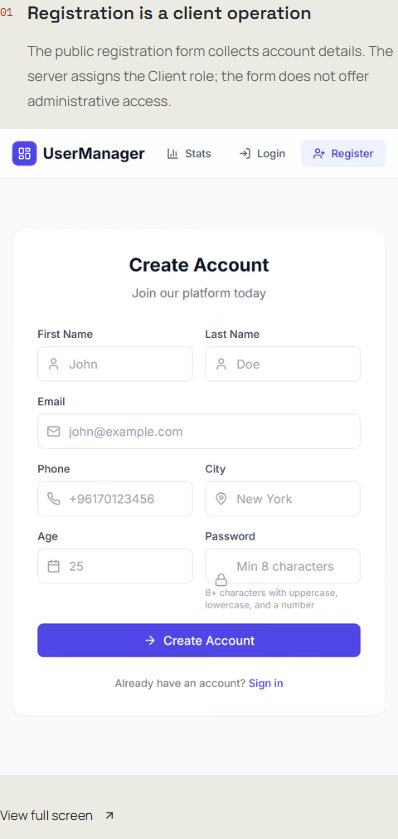
Retained registration workflow with its complete portrait, 430px.
 Registration workflow viewer: full original, 430px.
Registration workflow viewer: full original, 430px.
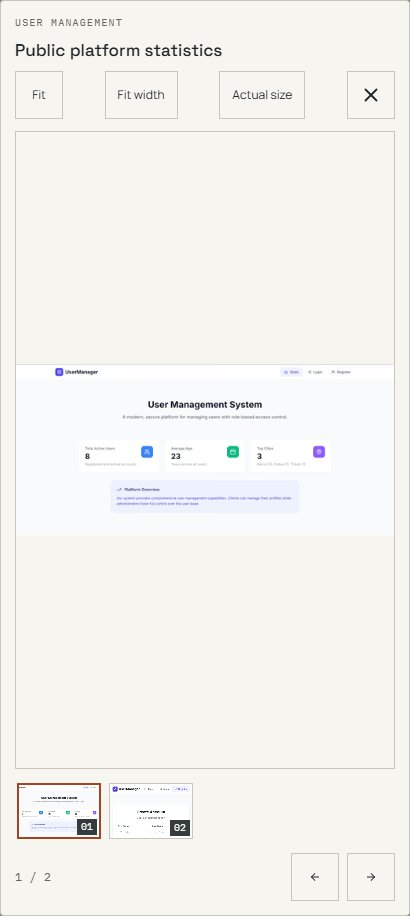
Fit viewer selection 1 / 2, 430px. Fit width and Actual size checks are recorded in viewer-panning.json.
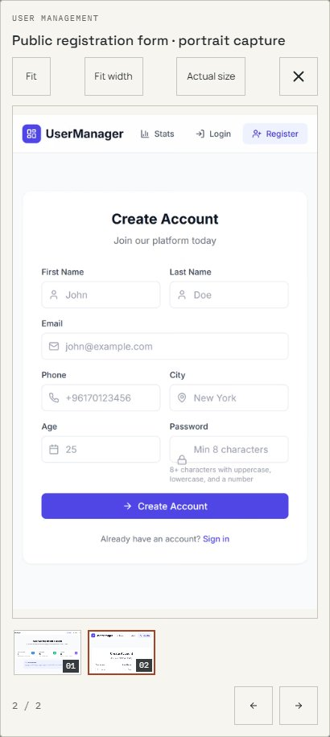
Fit viewer selection 2 / 2, 430px. Fit width and Actual size checks are recorded in viewer-panning.json.
768px — two complete selections
 Before introduction at 768px: three selections.
After introduction at 768px: two selections.
Before introduction at 768px: three selections.
After introduction at 768px: two selections.
Every remaining primary image and expanded-gallery selection
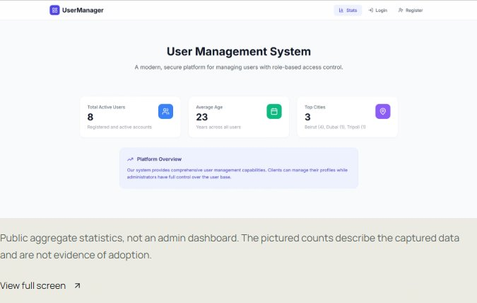
Primary 1 / 2: Public platform statistics; 768px.
 Primary 2 / 2: Complete public registration portrait; 768px.
Primary 2 / 2: Complete public registration portrait; 768px.
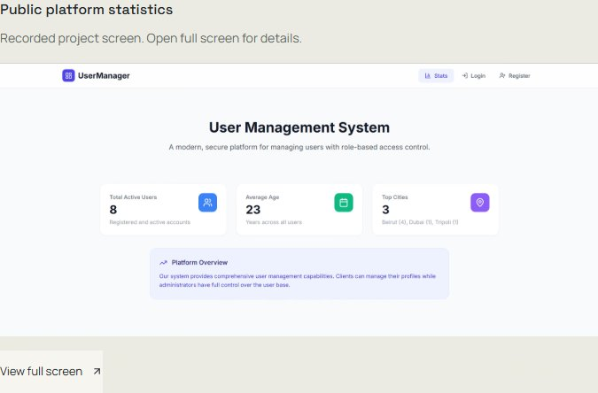
Expanded 1 / 2: Public platform statistics; 768px.
Expanded 2 / 2: Complete public registration portrait; 768px.
Registration workflow and all full-screen selections
 Retained registration workflow with its complete portrait, 768px.
Registration workflow viewer: full original, 768px.
Retained registration workflow with its complete portrait, 768px.
Registration workflow viewer: full original, 768px.
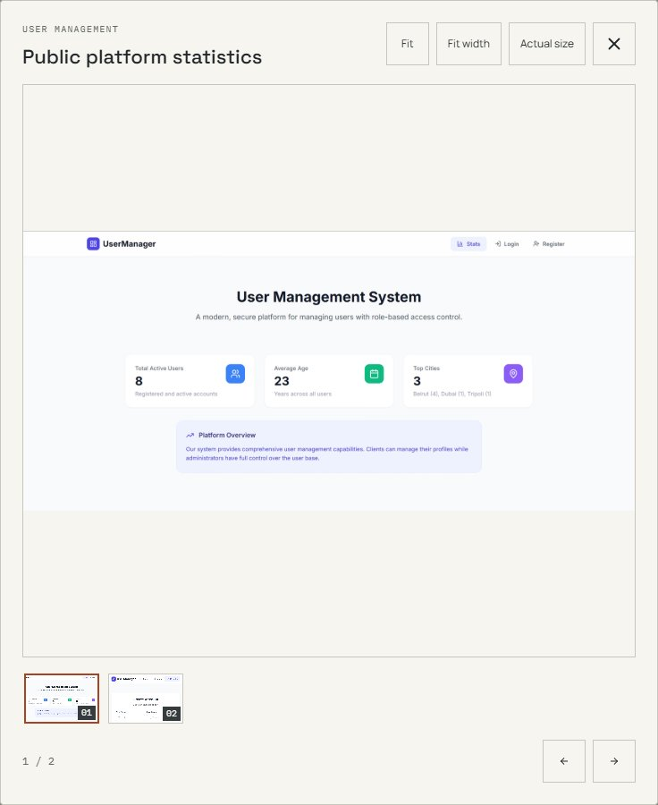
Fit viewer selection 1 / 2, 768px. Fit width and Actual size checks are recorded in viewer-panning.json.
Fit viewer selection 2 / 2, 768px. Fit width and Actual size checks are recorded in viewer-panning.json.
1024px — two complete selections
 Before introduction at 1024px: three selections.
After introduction at 1024px: two selections.
Before introduction at 1024px: three selections.
After introduction at 1024px: two selections.
Every remaining primary image and expanded-gallery selection
 Primary 1 / 2: Public platform statistics; 1024px.
Primary 2 / 2: Complete public registration portrait; 1024px.
Primary 1 / 2: Public platform statistics; 1024px.
Primary 2 / 2: Complete public registration portrait; 1024px.
 Expanded 1 / 2: Public platform statistics; 1024px.
Expanded 1 / 2: Public platform statistics; 1024px.
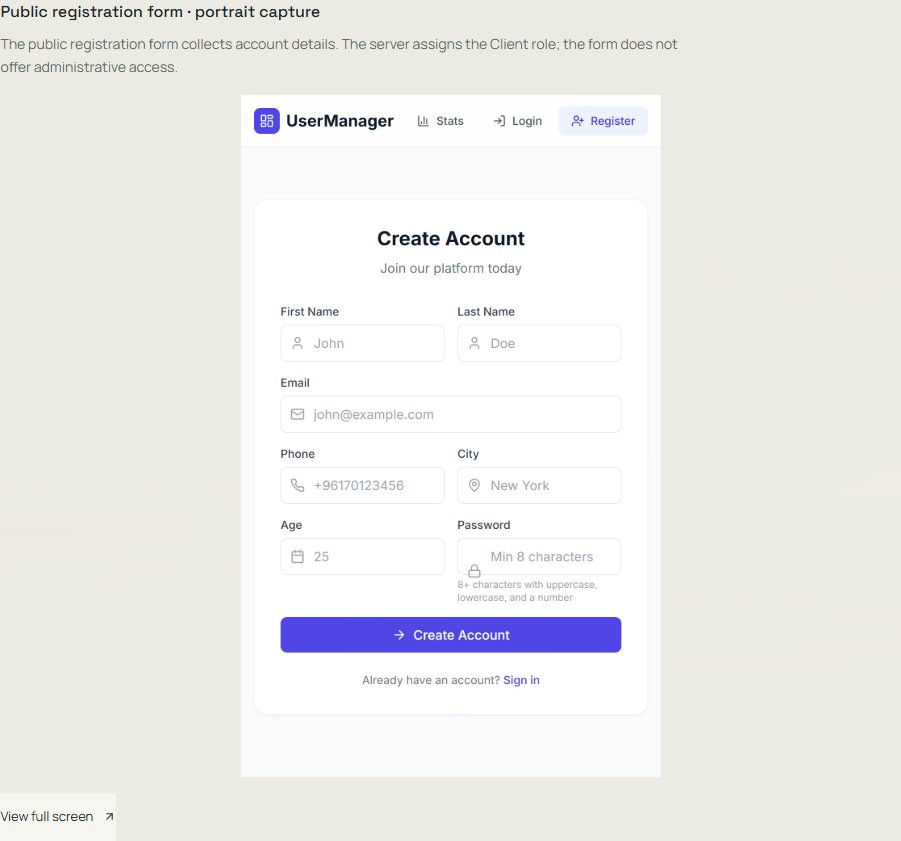
Expanded 2 / 2: Complete public registration portrait; 1024px.
Registration workflow and all full-screen selections
 Retained registration workflow with its complete portrait, 1024px.
Registration workflow viewer: full original, 1024px.
Retained registration workflow with its complete portrait, 1024px.
Registration workflow viewer: full original, 1024px.
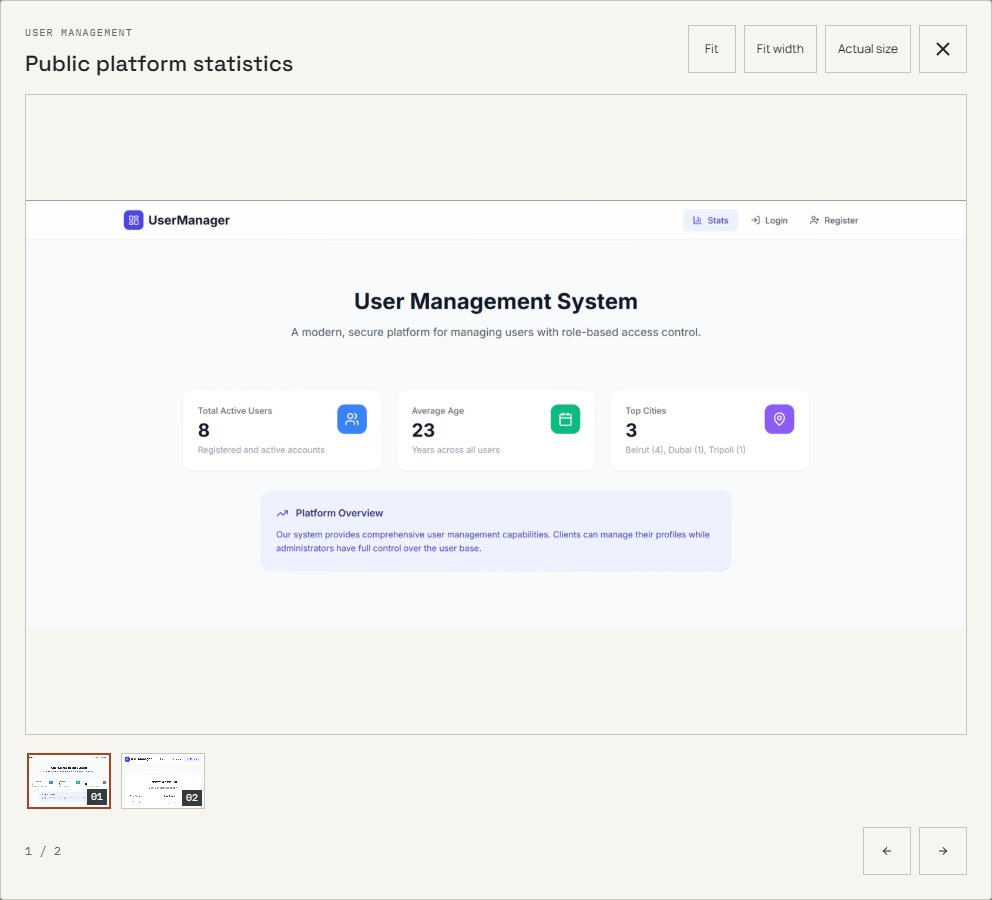
Fit viewer selection 1 / 2, 1024px. Fit width and Actual size checks are recorded in viewer-panning.json.
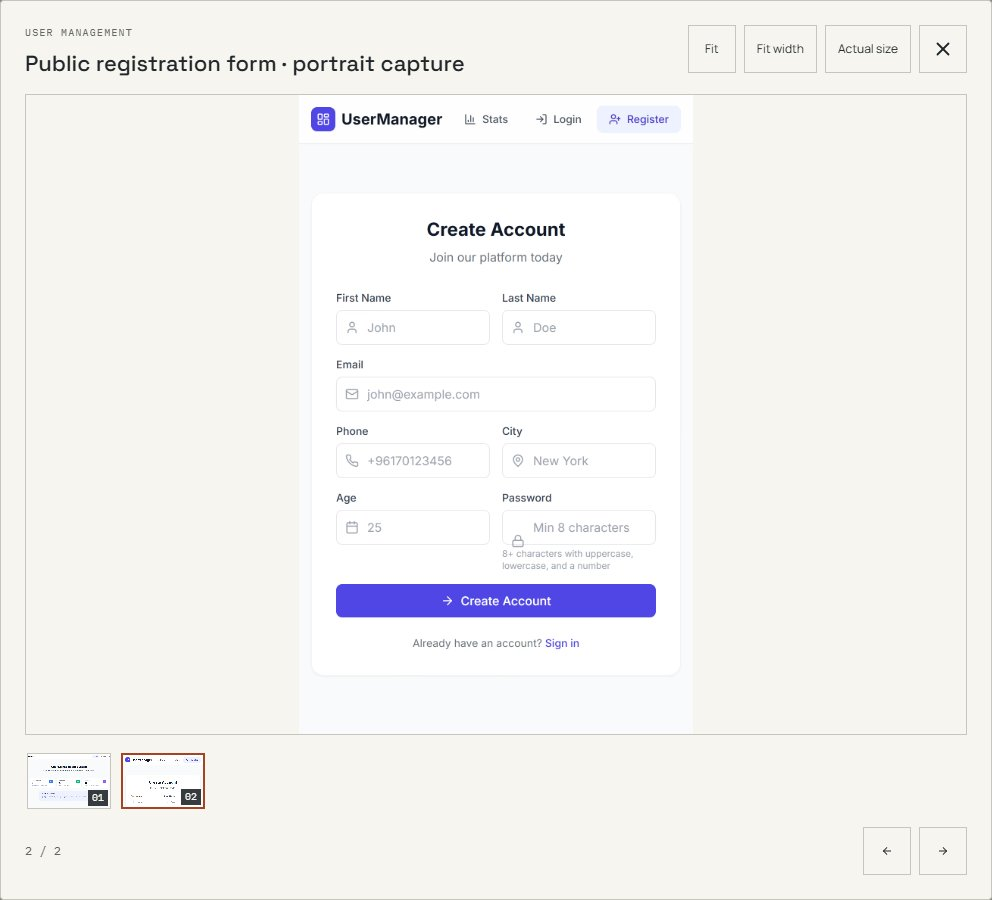
Fit viewer selection 2 / 2, 1024px. Fit width and Actual size checks are recorded in viewer-panning.json.
1440px — two complete selections
 Before introduction at 1440px: three selections.
After introduction at 1440px: two selections.
Before introduction at 1440px: three selections.
After introduction at 1440px: two selections.
Every remaining primary image and expanded-gallery selection
 Primary 1 / 2: Public platform statistics; 1440px.
Primary 1 / 2: Public platform statistics; 1440px.
 Primary 2 / 2: Complete public registration portrait; 1440px.
Primary 2 / 2: Complete public registration portrait; 1440px.
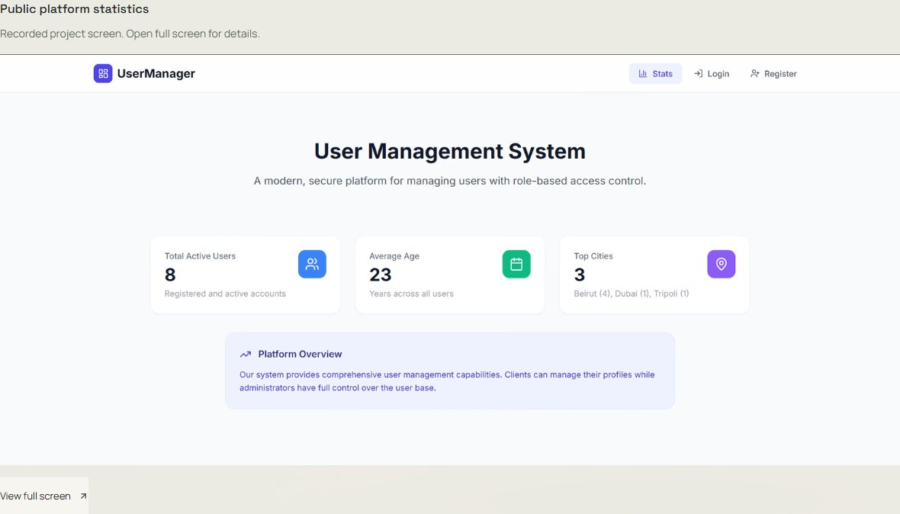
Expanded 1 / 2: Public platform statistics; 1440px.
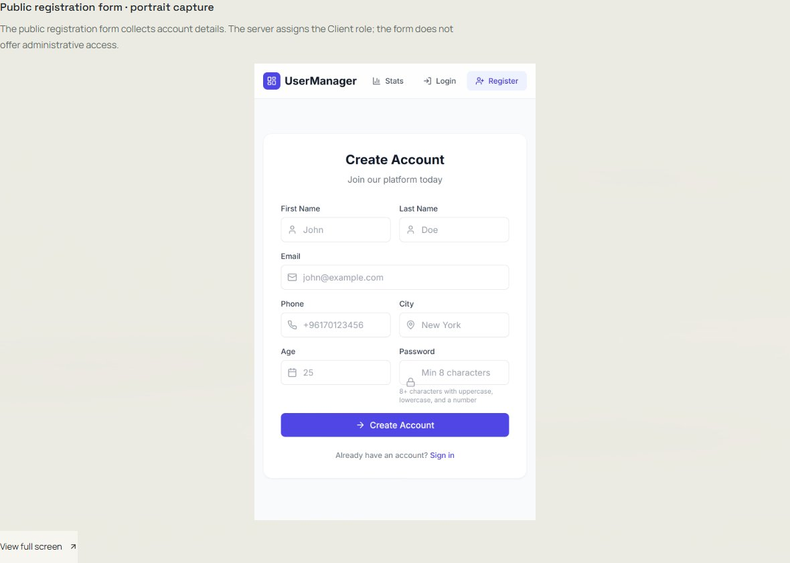
Expanded 2 / 2: Complete public registration portrait; 1440px.
Registration workflow and all full-screen selections
 Retained registration workflow with its complete portrait, 1440px.
Retained registration workflow with its complete portrait, 1440px.
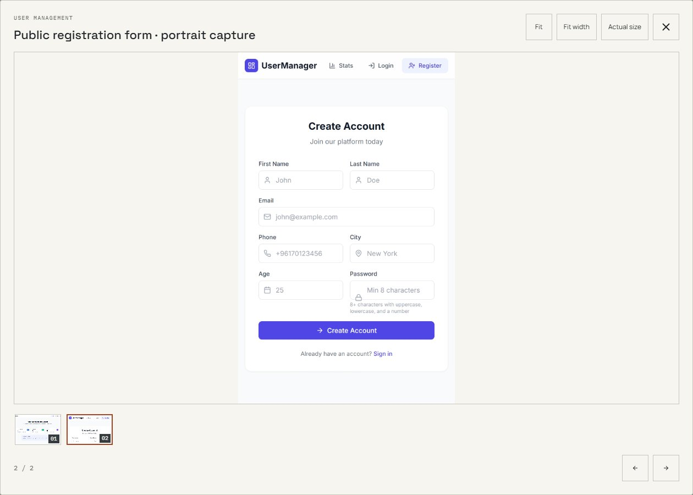
Registration workflow viewer: full original, 1440px.
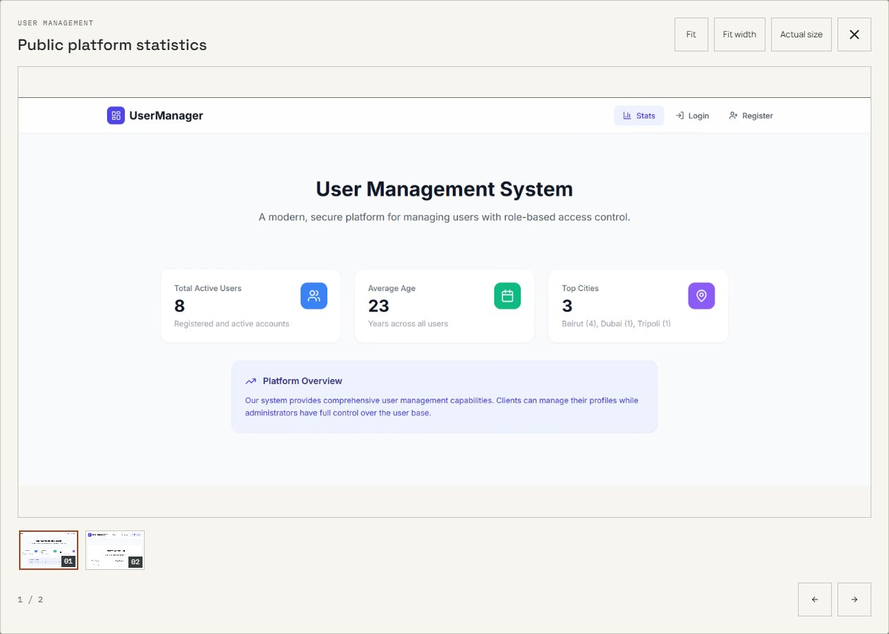
Fit viewer selection 1 / 2, 1440px. Fit width and Actual size checks are recorded in viewer-panning.json.
Fit viewer selection 2 / 2, 1440px. Fit width and Actual size checks are recorded in viewer-panning.json.
Cedar caption preserved
“03”, title and purpose stay below navigation. Existing regression assertions and motion code remain unchanged.
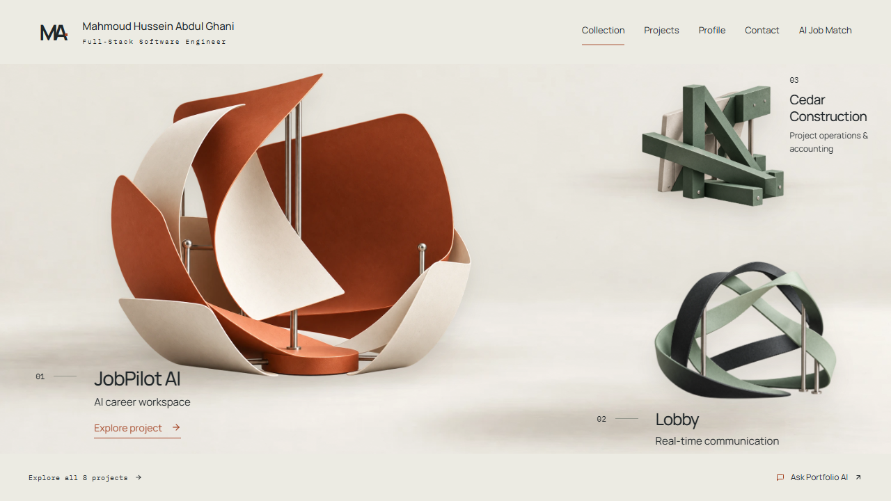
Actual Collection artwork at 1280 × 720; caption begins at y=108px below the 92px header.
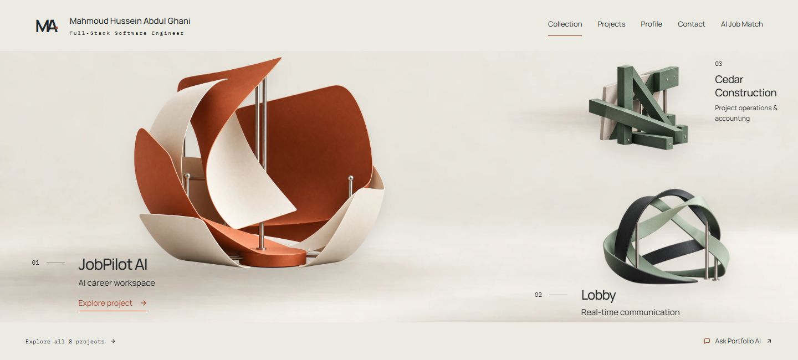
Actual Collection artwork at 1440 × 650; caption begins at y=108px below the 92px header.
 Actual Collection artwork at 1120 × 600; caption begins at y=108px below the 92px header.
Actual Collection artwork at 1120 × 600; caption begins at y=108px below the 92px header.
Remaining gaps: no physical-device verification; runtime CDN availability cannot be guaranteed by local cached-original review. The earlier tablet opening instability remains a separate issue. No motion code was changed.